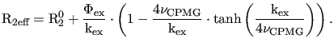

Next: Conjugate gradient methods Up: Optimisation algorithms Previous: Line search methods Contents Index
In the trust region class of algorithms the curvature of the space is modelled quadratically by (11.5). This model is assumed to be reliable only within a region of trust defined by the inequality
p

 where p is the step taken by the algorithm and
where p is the step taken by the algorithm and  is the radius of the n-dimensional sphere of trust (Nocedal and Wright, 1999). The solution sought for each iteration of the algorithm is
is the radius of the n-dimensional sphere of trust (Nocedal and Wright, 1999). The solution sought for each iteration of the algorithm is
where mk(p) is the quadratic model, Bk is a positive definite matrix which can be the true Hessian as in the Newton model or an approximation such as the BFGS matrix, and
p is the Euclidean norm of p. The trust region radius
is the Euclidean norm of p. The trust region radius  is modified dynamically during optimisation - if the quadratic model is found to be a poor representation of the space the radius is decreased whereas if the quadratic model is found to be reasonable the radius is increased to allow larger, more efficient steps to be taken.
is modified dynamically during optimisation - if the quadratic model is found to be a poor representation of the space the radius is decreased whereas if the quadratic model is found to be reasonable the radius is increased to allow larger, more efficient steps to be taken.
The Cauchy point algorithm is similar in concept to the steepest descent line search algorithm. The Cauchy point is the point lying on the gradient which minimises the quadratic model subject to the step being within the trust region. By iteratively finding the Cauchy point the local minimum can be found. The convergence of the technique is inefficient, being similar to that of the steepest descent algorithm.
In changing the trust region radius the exact solutions to (11.9) map out a curved trajectory which starts parallel to the gradient for small radii. The end of the trajectory, which occurs for radii greater than the step length, is the bottom of the quadratic model. The dogleg algorithm attempts to follow a similar path by first finding the minimum along the gradient and then finding the minimum along a trajectory from the current point to the bottom of the quadratic model. The minimum along the second path is either the trust region boundary or the quadratic solution. The matrix Bk of (11.9) can be the BFGS matrix, the unmodified Hessian, or a Hessian modified to be positive definite.
Another trust region algorithm is Steihaug's modified conjugate gradient approach (Steihaug, 1983). For each step k an iterative technique is used which is almost identical to the standard conjugate gradient procedure except for two additional termination conditions. The first is if the next step is outside the trust region, the second is if a direction of zero or negative curvature is encountered.
An almost exact solution to (11.9) can be found using an algorithm described in Nocedal and Wright (1999). This exact trust region algorithm aims to precisely find the minimum of the quadratic model mk of the space within the trust region  . Any matrix Bk can be used to construct the quadratic model. However, the technique is computationally expensive.
. Any matrix Bk can be used to construct the quadratic model. However, the technique is computationally expensive.